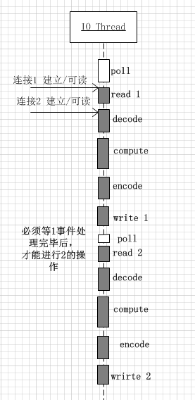
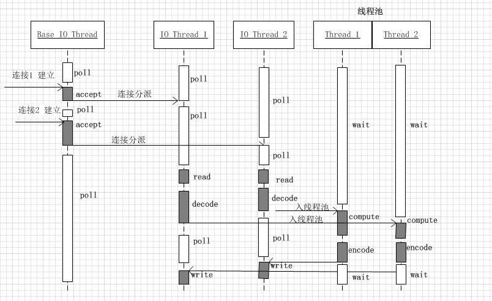

技术是随着需求的发展而不断前进的，正如服务器的并发量。对于单台服务器而言，资源是有限的，采用何种并发策略最大限度的利用服务器的性能，提高其吞吐量也是值得研究的，本篇将详述服务器的几种并发策略。
随着互联网的发展，技术也是在不断的进步的。最初的服务器都是基于进程/线程模型的，新到来一个TCP连接，就需要分配1个进程（或者线程）。一台机器无法创建很多进程。如果是并发数为1万，那就要创建1万个进程，对于单台服务器而言显然是无法承受的。这就是C10K问题。
web服务器需要不断的读取连接请求，然后进行处理，并将结果发送给客户端。设计并发策略的目的就是让I/O操作和CPU计算尽量重叠进行。以下列举几种常见的并发策略：
每个进程处理一个连接(process-per-connection)
基本采用accept+fork系统调用方式，即由主进程负责accept()来自客户端的连接，收到客户端连接后立马fork()一个新的worker进程来处理，处理结束后进程被销毁。
传统Unix并发网络编程方案，该方案适合并发连接数不大的情况。至今仍有一些网络服务器用这种方式：PostgreSQL和Perforce的服务端。该方案适合“计算响应时间的工作量远大于fork( )的开销”这种情况。这种方案适合长连接，但不大适合短连接，因为fork()开销大于处理任务的用时。Python代码如下所示：
#ForkingTCPServer 会对每个客户连接新建一个子进程
from SocketServer import BaseRequestHandler, TCPServer
from SocketServer import ForkingTCPServer, ThreadingTCPServer
class EchoHandler(BaseRequestHandler):
def handle(self):
print "got connection from", self.client_address
while True:
data = self.request.recv(4096)
if data:
sent = self.request.send(data) # sendall?
else:
print "disconnect", self.client_address
self.request.close()
break
if __name__ == "__main__":
listen_address = ("0.0.0.0", 2007)
server = ForkingTCPServer(listen_address, EchoHandler)
server.serve_forever()
thread-per-connection(每个线程处理一个连接)，该方式与 process-per-connection类似，初始化线程的开销稍微小一些，但连接数仍然线程数的限制，且连接数非常大，对系统将产生很大的负担。
每个进程处理多个连接（prefork）
该方式是Apache httpd一直采用的方案，该方式由主进程预先创建一定数量的子进程，每个请求由一个子进程来处理，且每个子进程可以处理多个请求。父进程往往只负责子进程的管理，根据负载管理子进程的数量。
Apache的所有子进程使用阻塞accept()来竞争接收连接。但是当一个请求连接到达，内核会激活所有阻塞在accept()的子进程，但只有一个能够成功获得连接并返回到用户空间，其余的子进程由于得不到连接而继续回到休眠状态，这种“惊群”也会造成一定的性能损耗。
当然，一个子进程处理多个请求，有效方式基本都是I/O复用（复用的是进程/线程），可以使用select/poll/epoll等不同方案实现（见[I/O多路复用详解]()）。下面给出了单个进程的poll实现：
#事件的处理通过handlers转发到各个函数中，不再集中在一处
import socket
import select
server_socket = socket.socket(socket.AF_INET, socket.SOCK_STREAM)
server_socket.setsockopt(socket.SOL_SOCKET, socket.SO_REUSEADDR, 1)
server_socket.bind(('', 2007))
server_socket.listen(5)
# serversocket.setblocking(0)
poll = select.poll() # epoll() should work the same
connections = {}
handlers = {}
#普通客户连接的处理函数时handler_request，又将连接断开和数据到达两个事件分开
def handle_input(socket, data):
socket.send(data) # sendall() partial?
def handle_request(fileno, event):
if event & select.POLLIN:
client_socket = connections[fileno]
data = client_socket.recv(4096)
if data:
handle_input(client_socket, data)
else:
poll.unregister(fileno)
client_socket.close()
del connections[fileno]
del handlers[fileno]
#listening fd 的处理函数时handle_accept，它会注册客户连接的handler
def handle_accept(fileno, event):
(client_socket, client_address) = server_socket.accept()
print "got connection from", client_address
# client_socket.setblocking(0)
poll.register(client_socket.fileno(), select.POLLIN)
connections[client_socket.fileno()] = client_socket
handlers[client_socket.fileno()] = handle_request
poll.register(server_socket.fileno(), select.POLLIN)
handlers[server_socket.fileno()] = handle_accept
while True:
events = poll.poll(10000) # 10 seconds
for fileno, event in events:
handler = handlers[fileno]
handler(fileno, event)
因为Linux在互联网中是使用率最高的系统，服务器的I/O多路复用基本都采用epoll方式实现。但是epoll依赖于特定的平台。目前主流的web服务器基本采用Reactor模型(事件驱动模型，EventLoop)，如Nginx、Node.js等。
Reactor模型
在高性能的web服务器设计中，使用最广泛的基本是Reactor模式（non-blocking IO + IO multiplexing）。

在该模式下，程序的基本结构是时间循环（event loop），以时间驱动（event-driven）和事件回调方式实现业务逻辑。伪代码如下：
while(!done) {
int timeout = getNextTimedCallback();
int retval = epoll(fds, nfds, timeout);
if (retval < 0) {
//处理错误，回调用户的error handler
} else {
//处理到期的timers, 回调用户的timer handler
if（retval > 0）{
//处理IO事件，回调用户的IO event handler
}
}
}
Reactor模型的优点是通过网络库来管理数据的收发，程序只关心逻辑，通过该模型能够提高用户的并发度。
该模型适合IO密集的应用，但是不太适合CPU密集的应用，因为较难发挥多核的威力。一定要注意避免在事件回调中执行耗时的操作，否则会影响程序的响应。
使用该方式的web服务器有很多，包括lighthttpd(reactor)，NodeJs，Nginx(每个工作进程一个reactor)，ACE, Twisted(Python), libevent/libev(事件驱动库，能够兼容不同的系统平台)。
协程(coroutine)
该方式与reactor模型本质上区别不大，关键在于回调上下文的保存以及执行机制。这种方式试图通过一组少量的线程来实现多个任务，旦某个任务阻塞，则可能用同一线程继续运行其他任务，避免大量上下文的切换。而且，各个协程之间的切换，往往是用户通过代码来显式指定的（跟各种 callback 类似），不需要内核参与。
综合而言，相对于reactor模型， 协程的优势在于能够允许创建大量实例/连接（百万级别），且类似于同步阻塞方式。缺点与reactor类似，对于CPU密集型计算，其他协程将不能继续运行了。
Erlang解决了协程密集计算的问题，它基于自行开发VM，并不执行机器码。即使存在密集计算的场景，VM发现某个协程执行时间过长，也可以进行中止切换。Golang由于是直接执行机器码的，所以无法解决此问题。所以Golang要求用户必须在密集计算的代码中，自行Yield。
Reactors + threads pool模型
对于上述的reactor模型，已经说过，会存在callback hell问题，不适用于CPU密集型的场景。自然我们会想到将CPU密集型的任务分离出来，单独用线程处理。
这种方案适合既有突发IO（利用多线程处理多个连接上的IO），又有突发计算的应用（利用线程池把一个连接上的计算任务分配给多个线程去做). 示例图如下所示：
